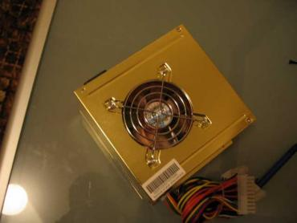
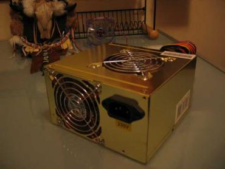
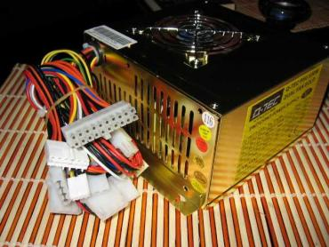
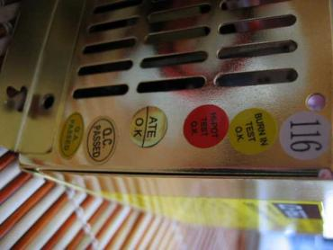
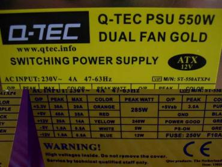
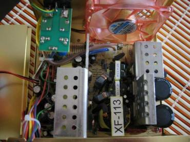
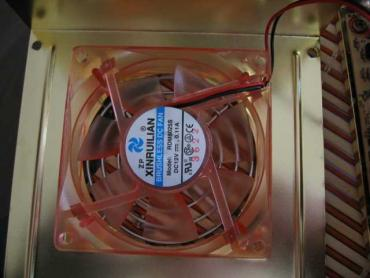
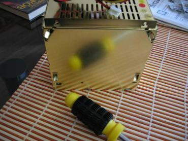

Q-Tec 550W PSU
Kaip žinome, šiais laikais vis labiau ir labiau tobulėja kompiuteriai ir jiems "užkurti" reikia vis daugiau ir daugiau galios. Senais gerais laikais kompiuteriui užtekdavo 150W maitinimo bloko, kad jis galėtų pilnai funkcionuoti, bet šiais laikais, kai kompiuteryje (dažniausiai) būna 2 cd-rom'ai, keli kietieji diskai, daug galios reikalaujantys procesoriai ir, pas modder'ius, ventiliatoriai ir neoninės lempos, tai reikia ganėtinai gero ir galingo maitinimo bloko, kad viskas galėtų deramai veikti. Taigi aš pamaniau, kad ne pro šalį būtų apžvelgti būtent maitinimo bloką. Tai yra, pagal aprašymą, ganėtinai galingas maitinimo blokas, kuris turėtų tikti net daugiausiai energijos reikalaujančioms sistemoms. Pristatau jums Q-Tec 550W maitinimo bloką! Taigi dabar ir bandysiu išsiaiškinti, ar jis jau toks geras, kaip jį giria kiti.
Žvilgsnis iš arčiau
Gavęs šį maitinimo bloką į savo rankas, maloniai nustebau. Jis buvo labai kokybiškai įpakuotas. Jis buvo įpakavime iš ganėtinai tvirto kartono, o viduje - politileniniame maišelyje su oro burbuliukais. Taip supakuotas maitinimo blokas turėtų nepažeistas pasiekti jūsų namus, net jei jį jums veš girtas Petras su kreivomis rankomis. Pateikiu kelias išorės nuotraukas:
Lendam į vidų
Atidaręs dėžę, joje pamačiau tai, kas man labai patiko. Labai gražiai nudažytą maitinimo bloką su dviem ventiliatoriais. Maitinimo blokas yra auksinės spalvos, kuri, mano manymu, yra labai graži. Tarp kitko, tai gražiausiai nudažytas maitinimo blokas, kurį man teko sutikti savo gyvenime. Jei turite kompiuterio korpuse langą, toks maitinimo blokas tik džiugins jūsų ir kitų akis. Atidaręs maitinimo bloką (tuo pačiu pažeidęs garantijos lipduką, viduje radau ganėtinai įprastą maitinimo bloką, kuris savo išvaizda niekuo nesiskiria nuo kitų. Pora, mano manymu, per mažų radiatorių ir visas kitas dalis, kurios priklauso būti tokio tipo įrenginiuose.
Taip pat viduje "gyvena" du raudono permatomo plastiko ventiliatoriai, kurie man labai patiko. Man iškart atsirado minčių, kaip galima būtų "pagyvinti" šį maitinimo bloką, įdėjus porą raudonų šviesos diodų arba mažą neoninę lempą, bet apie tai vėliau, dabar tęsiame apžvalgą. Pateikiu kelias nuotraukas, kad jūs galėtumėte geriau įsivaizduoti, apie ką aš čia kalbėjau:
       
Testavimas
Testuodamas šį maitinimo bloką, naudojau štai tokią kompiuterio konfiguraciją:
- Procesorius - AMD Athlon XP 1700+ Palomino
- Motininė plokštė - Biostar M7vit Pro (VIA KT400)
- RAM - PQI PC 2700 (333MHz) 512MB
- Video - GeForce 4 MX 440SE 64MB DDR 128bit
- Hdd - Samsung 20Gb 7200 RPM & Seagate Barracuda 80GB 7200 RPM
- DVD & CDRW
- SB - Creative Live 5.1
- Lan - Acorp LAN-card
- Stuff - 4 x Titan fan'ai, 1 x skaidrus fan'as, 2 x Sunbeam neoninės lempos.
Ir štai kokius rezultatus gavau paleidęs viską i darbą. Testavau abejais režimais - "idle" ir "full load", t.y., kaip kompiuteris veikė "laisva eiga" ir pilnai apkrautas (30min veikė PCmark2001 testas).
Atsiminkite, rezultatai nėra 100% tikslūs, todėl aš neprisiimu atsakomybės, jei jūs įsigiję šį daiktą, gausite kitokius rezultatus!
Rezultatai:
| Įtampa | Idle | Load |
| +3.3 V | +3.3 V | +3.3 V |
| +5 V | +5.04 V | +4.99 V |
| +12 V | +12.03 V | +12.09 V |
Išvados
Iš rezultatų matosi, kad tai yra tikrai ganėtinai galingas ir stabilus maitinimo blokas, kurio galios turėtų užtekti visiems. Kaikuriems nepatiks tai, kad šis maitinimo blokas nėra visiškai tylus (33dB), bet turint kompiuteryje ne vieną ventiliatorių, toks maitinimo blokas žymiai nepadidins kompiuterio skleidžiamo garso. Taip pat man labai patiko, kad šis maitinimo blokas turi 2 ventiliatorius, kurie pučia orą taip pat gerai, kaip ir atrodo. Palyginus su kitų firmų (Enermax, Thermaltake...) maitinimo blokais, šis yra nebrangus, bet taip pat galingas. Jo kaina yra apytiksliai 140-150Lt. Už šiuos pinigus jūs gaunate brangiai atrodantį ir gerai veikiantį maitinimo bloką. Aš jam suteikiu 9 iš 10 balų ir tikrai rekomenduojų visiems žmonėms, nes jūs gaunate pinigų vertą daiktą, kuris kartais parodo save neprasčiau negu 400-500Lt kainuojantys žinomesnių firmų analogiški maitinimo blokai.
Jei norėsite pakomentuoti mano straipsnį arba pareikšti savo nuomonę, rašykite man: marlin@delfi.lt arba apsilankykite www.modding.lt forume.


{kind=link}
{kind=link}
{kind=link}
{kind=link}
{kind=link}
{kind=link}
{kind=link}
{kind=link}
{kind=link}
{kind=link}